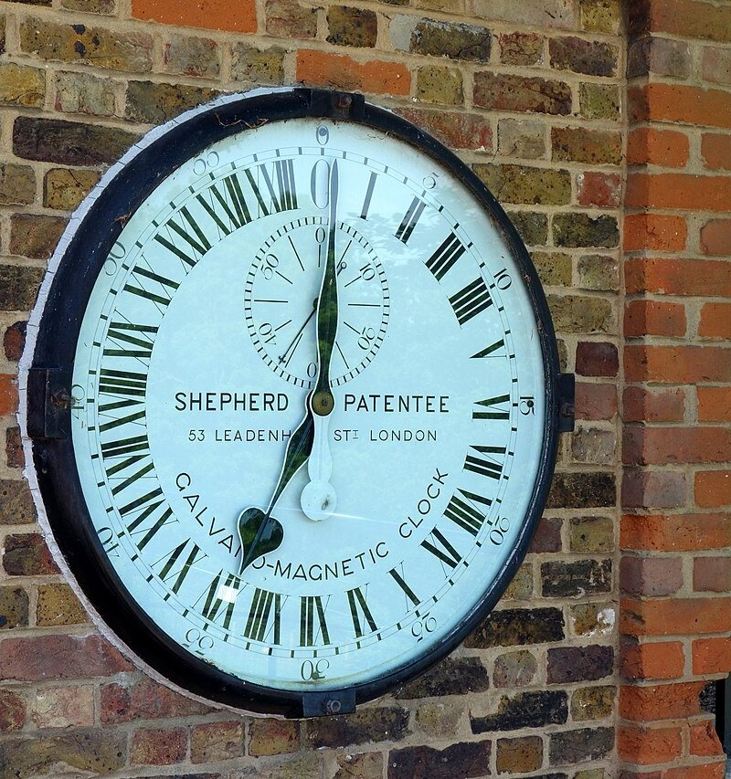

Nella pagina 1.2 abbiamo collocato una stella nel cielo dell’osservatore con $H = \theta - \alpha$, dove $\theta$ è l’angolo di cui il cielo ha ruotato da quando il punto vernale γ ha attraversato il meridiano. Abbiamo dovuto impostare $\theta$ a mano. Per prevedere qualunque cosa, dobbiamo invece leggerlo da un orologio e da un calendario.
Una volta noto $\theta$ in ogni istante, possiamo prevedere quando una stella attraversa il meridiano in qualunque luogo, e per quanto tempo il Sole resta sopra l’orizzonte in qualunque data e a qualunque latitudine geografica.
1 · OsservazioneIl giorno delle stelle e il giorno del Sole
Se cronometri una stella che attraversa il meridiano in due notti, con un orologio che segna l’ora ordinaria, troverai che torna dopo 23 h 56 min 4 s. Quindi ogni notte la attraversa circa quattro minuti prima della notte precedente, quasi due ore prima nel giro di un mese.
Per questo le stelle che vediamo a una data ora cambiano con le stagioni. Da Roma, Betelgeuse in Orione attraversa il meridiano a mezzanotte intorno al 20 dicembre, alle 22:00 intorno al 19 gennaio, e alle 20:00 intorno al 18 febbraio, sempre in tempo medio locale, il tempo dell’orologio del meridiano di Roma stessa.
L’intervallo fra un mezzogiorno e il successivo, il giorno solare vero, è meno regolare del giorno delle stelle. Nel 2025 è variato da 21 s meno di 24 ore a settembre a 30 s in più a dicembre, eppure la sua media sull’anno è stata di 24 ore entro un decimo di secondo, perché i nostri orologi sono definiti così.
Tolomeo mette entrambi i fatti in un’unica definizione. La rotazione del cielo, «il ritorno di un dato punto dell’equatore» al meridiano, richiede 360 gradi di tempo, mentre un giorno solare medio richiede «360 gradi di tempo di una rivoluzione dell’equatore più circa $0^\circ 59'$ gradi di tempo, che è l’ammontare del moto medio del sole in quel periodo» (Almagest III 9).
Un grado di tempo è il tempo che l’equatore impiega a ruotare di $1^\circ$ attraverso il meridiano, $\tfrac{1}{15}$ di ora, cioè 4 minuti (introduzione di Toomer). Gli $0^\circ 59'$ ($0{,}983^\circ$) di Tolomeo sono quindi 3,93 minuti, la differenza che abbiamo trovato fra il giorno delle stelle e il giorno del Sole.
In un anno quei quattro minuti al giorno si sommano fino a un intero giro del cielo, e Copernico conta la differenza in questo modo: «nel corso di un anno intero avvengono 365 rotazioni. Queste sono aumentate di circa un’intera rotazione supplementare in seguito a un prolungamento quotidiano dovuto all’avanzare apparente del sole» (De Revolutionibus III 26 [f. 96v]). La Figura 1 mostra il giro in più che si accumula nel corso del 2025.
Nella figura
- vista
- dall’esterno della sfera, sopra P, fino alla declinazione $-60^\circ$ sul bordo
- blu
- l’equatore celeste
- oro
- l’eclittica, continua dal posto del Sole il 1º gennaio 2025 alle 0 h UT (l’anello) fino al Sole
Lettura
- trascorso, giri
- contati dal 1º gennaio 2025, 0 h UT; i giri del Sole sono i suoi passaggi al meridiano
2 · ModelloTempo siderale e tempo solare medio
Il giorno sidereo e il giorno solare
Manteniamo il cielo che ruota della pagina 1.1, in cui le stelle ruotano attorno a P a velocità costante, e chiamiamo giorno sidereo la durata di un giro. Il Sole partecipa a quel giro, ma si sposta anche verso est lungo l’eclittica, di circa $1^\circ$ al giorno rispetto alle stelle, quindi torna al meridiano un po’ più tardi di loro.
Per vedere quanto più tardi, facciamo crescere uniformemente l’ascensione retta del Sole, di $n$ gradi al giorno. Il suo angolo orario è $H_\odot = \theta - \alpha_\odot$, come quello di qualunque altro punto, quindi se il cielo ruota con velocità $\omega$, i due angoli crescono con le velocità
$$\frac{d\theta}{dt} = \omega, \qquad \frac{dH_\odot}{dt} = \omega - n.$$Un giorno solare, da un passaggio del Sole al meridiano al successivo, è il tempo in cui $H_\odot$ cresce di $360^\circ$, e un giorno sidereo è il tempo in cui cresce $\theta$ della stessa quantità. In un anno di $Y$ giorni solari il Sole fa un giro del cielo ($nY = 360^\circ$). In quel tempo $H_\odot$ cresce di $360^\circ\,Y$, e $\theta$, che ogni giorno guadagna $n$ su di esso, cresce di un giro in più, $360^\circ\,(Y + 1)$:
Con l’anno tropico di 365,24219 giorni, un anno contiene 366,24219 giorni siderei, e un giorno sidereo dura 23 h 56 min 4 s, il giro che abbiamo cronometrato nella sezione 1.
Il tempo siderale e l’angolo orario
Un orologio che va di pari passo con le stelle legge direttamente l’angolo $\theta$, e la sua lettura si chiama tempo siderale locale. Di solito si dà in ore, $15^\circ$ all’ora, quindi segna $0^\text{h}$ quando γ attraversa il meridiano e percorre $24^\text{h}$ in un giorno sidereo.
Una stella attraversa il meridiano quando il suo angolo orario $H = \theta - \alpha$ è zero, cioè quando il tempo siderale è uguale alla sua ascensione retta. Quindi in ogni istante le stelle sul meridiano sono quelle la cui ascensione retta è il tempo siderale del momento, ed è per questo che l’ascensione retta si conta in ore, come il tempo siderale.
Ogni luogo ha il suo meridiano, e quindi il suo tempo siderale. Per un osservatore alla longitudine geografica $\ell$ a est di Greenwich, il meridiano sta $\ell$ più a est fra le stelle rispetto al meridiano di Greenwich. Poiché l’ascensione retta su un meridiano è il suo tempo siderale, $\theta$ supera di $\ell$ il tempo siderale di Greenwich, $\theta_G$:
$$\theta = \theta_G + \ell, \qquad H = \theta_G + \ell - \alpha.$$Le longitudini geografiche in questo sito sono positive verso est. Meeus le conta positive verso ovest, e Fitzpatrick scrive $\varphi$ per la longitudine geografica (e $L$ per la latitudine geografica). Le loro formule hanno $-\ell$ dove le nostre hanno $+\ell$.
Tempo solare medio e Tempo Universale
Gli orologi con cui viviamo seguono il Sole, ma il Sole reale è un cattivo segnatempo, perché i suoi giorni sono disuguali, come abbiamo visto nella sezione 1, quindi gli astronomi hanno definito un Sole medio fittizio che si muove lungo l’equatore a velocità costante. La sua ascensione retta è la longitudine eclittica media del Sole $\bar\lambda$, che cresce di $n$ ogni giorno:
Qui $d$ è il tempo in giorni di UT dall’epoca J2000.0, il 1º gennaio 2000 alle 12:00 UT, e $L_0$ è l’ascensione retta del Sole medio a quell’epoca. La sezione 3 li misura entrambi dal Sole. Il Tempo Universale stesso è definito da valori di queste due quantità fissati per convenzione dal 1984 (Meeus, cap. 12), $L_0 = 280{,}46061837^\circ$ e $n = 0{,}98564736629^\circ$ al giorno, e usiamo questi per seguire un istante attraverso i passi qui sotto.
Il tempo solare medio in un luogo è l’angolo orario del Sole medio più 12 ore, così che il giorno cominci a mezzanotte.
A Greenwich il tempo solare medio si chiama Tempo Universale, UT, e in qualunque altro luogo il tempo medio locale è $\text{UT} + \ell / 15^\circ$ ore. A Roma ($\ell = 12{,}50^\circ$) è UT + 50 min.
Gli orologi civili segnano invece il tempo medio di un meridiano di riferimento. Il Tempo dell’Europa Centrale, per esempio, è UT + 1 h, quindi a Roma il mezzogiorno medio locale cade verso le 12:10 CET.


Il tempo siderale dall’orologio
Un orologio dà l’angolo orario del Sole medio, e ciò che vogliamo è l’angolo orario di γ, il tempo siderale. Passare dall’uno all’altro richiede pochi brevi passi. Per essere sicuri che ognuno sia giusto, seguiremo un solo istante attraverso tutti: il 20 aprile 2026, alle 20:00 UT, a Greenwich.
Passo 1: il tempo siderale è l’angolo orario del Sole medio più la sua ascensione retta. La relazione $H = \theta - \alpha$ vale per ogni punto del cielo, Sole medio compreso, quindi a Greenwich $H_m = \theta_G - \alpha_m$, ovvero
$$\theta_G = H_m + \alpha_m.$$La Figura 2 disegna i tre angoli sull’equatore. Andando verso ovest dal meridiano, raggiungiamo il Sole medio dopo $H_m$, e γ dopo un ulteriore $\alpha_m$, perché l’ascensione retta si conta verso est da γ al Sole medio.
Nella figura
- $H_m$, $\theta_G$
- contati verso ovest dal meridiano (in senso orario in questa vista)
- $\alpha_m$
- contato verso est da γ
Passo 2: l’orologio dà $H_m$. Il tempo solare medio è definito in modo che il Sole medio attraversi il meridiano di Greenwich alle 12:00 UT, e il suo angolo orario cresce poi di $15^\circ$ per ogni ora di UT:
$$H_m = 15^\circ\,(\text{UT} - 12\,\text{h}).$$Alle 20:00 UT, $H_m = 15^\circ \times 8 = 120^\circ$.
Passo 3: la data dà $\alpha_m$. Il 20 aprile 2026 alle 20:00 UT, $d = 9606{,}3333$ giorni, e con $L_0$ e $n$ dell’UT, $\alpha_m = L_0 + n\,d = 28{,}92^\circ$ (modulo $360^\circ$). Sommando i due angoli si ha $\theta_G = 120^\circ + 28{,}92^\circ = 148{,}92^\circ$.
Passo 4: $H_m$ in funzione di $d$. I passi 2 e 3 usano due variabili, l’ora del giorno e la data, e vorremmo un’unica formula in $d$. Poiché $d$ si conta da un mezzogiorno, la sua parte intera $N$ è il numero di mezzogiorni dall’epoca, e la sua parte frazionaria è il tempo dall’ultimo mezzogiorno:
$$d = N + \frac{\text{UT} - 12\,\text{h}}{24\,\text{h}}, \qquad 360^\circ\,d = 360^\circ N + 15^\circ\,(\text{UT} - 12\,\text{h}) = 360^\circ N + H_m.$$I giri interi non cambiano una direzione, quindi possiamo sostituire $H_m$ con $360^\circ\,d$. Il 20 aprile, $360^\circ \times 9606{,}3333$ fa 9606 giri interi più $120^\circ$, che è proprio $H_m$. Mettendo insieme i quattro passi,
$$\theta_G = 360^\circ\,d + L_0 + n\,d = L_0 + (360^\circ + n)\,d.$$La velocità $360^\circ + n$ è l’$\omega$ che abbiamo incontrato all’inizio di questa sezione. In un giorno di UT il cielo ruota di $360^\circ$ rispetto al Sole medio, perché questo è un giorno solare, e nello stesso giorno il Sole medio si sposta di $n$ più a est di γ. Rispetto a γ, dunque, il cielo ruota di $360^\circ + n$.
Questo è l’orologio di questa pagina. Con i valori propri dell’UT per $L_0$ e $n$ diventa la formula che definisce il tempo siderale,
a cui Meeus aggiunge altri due termini, in $T^2$ e $T^3$, che valgono solo 6 ms nel 2026. La velocità contiene la durata dell’anno, perché $360^\circ / n = 365{,}24219$ giorni, l’anno tropico. Il nostro orologio usa i valori di $L_0$ e $n$ che la sezione 3 misura dal Sole, e la sezione 4 lo verifica contro il cielo.
Possiamo ora controllare l’angolo che abbiamo impostato a mano nella pagina 1.2, dove Aldebaran stava nel cielo di Roma il 1º gennaio 2026 alle 19:00 UT con $\theta = 38{,}94^\circ$. In quell’istante la formula dà $\theta_G = 26{,}44^\circ$, e aggiungendo l’$\ell = 12{,}50^\circ$ di Roma si ottiene lo stesso $\theta = 38{,}94^\circ$ ($2^\text{h}35^\text{m}45^\text{s}$). La Figura 3 parte da quell’istante.
Nella figura
- verde
- il meridiano di Greenwich e, $\ell$ a est di esso, il meridiano dell’osservatore
- $\theta_G$, $H$
- contati verso ovest (in senso orario in questa vista), $H$ dal meridiano dell’osservatore
- $\alpha$, $\ell$
- contati verso est
La data giuliana
Per usare la formula ci serve $d$, il numero di giorni fra due date, e i calendari lo rendono scomodo. I mesi hanno durate disuguali, alcuni anni hanno un giorno bisestile, e con la riforma gregoriana al 4 ottobre 1582 seguì direttamente il 15 ottobre. Gli astronomi contano quindi i giorni in modo continuo.
La data giuliana JD conta i giorni dal mezzogiorno UT del 1º gennaio 4713 a.C. del calendario giuliano, con l’ora del giorno come frazione. J2000.0 è JD 2451545,0, e il 1º gennaio 2026 alle 0 h UT è JD 2461041,5. In questo conteggio i due giorni della riforma gregoriana, il 4 e il 15 ottobre 1582, si susseguono come JD 2299159,5 e 2299160,5.
Una data giuliana comincia a mezzogiorno, come il giorno astronomico di Tolomeo. Egli contava il giorno dal passaggio del Sole al meridiano perché il sorgere del Sole avviene in momenti diversi a latitudini geografiche diverse, mentre il meridiano si comporta «allo stesso modo in ogni luogo della terra» (Almagest III 9), e pose tutte le sue epoche a mezzogiorno (III 7).
Il mezzogiorno non era una scelta ovvia. Nella vita ordinaria il giorno cominciava all’alba per i Babilonesi, al tramonto per gli Ateniesi e a mezzanotte per i Romani, come ricorda Copernico (De Revolutionibus III 26).
Per convertire una data del calendario (anno $Y$, mese $M$, giorno $D$ con la sua frazione) in data giuliana, Meeus (cap. 7) dà
$$\text{JD} = \lfloor 365{,}25\,(Y + 4716) \rfloor + \lfloor 30{,}6001\,(M + 1) \rfloor + D + B - 1524{,}5,$$con gennaio e febbraio contati come mesi 13 e 14 dell’anno precedente, e $B = 2 - \lfloor Y/100 \rfloor + \lfloor Y/400 \rfloor$ (calendario gregoriano) oppure $B = 0$ (calendario giuliano).
Da dove vengono i termini
Far cominciare l’anno a marzo mette il giorno bisestile alla fine dell’anno, così il numero di giorni prima di un dato mese non dipende dal fatto che l’anno sia bisestile. Da marzo in poi i mesi hanno 31, 30, 31, 30, 31 giorni, uno schema che si ripete con una media di 30,6 giorni, e $\lfloor 30{,}6001\,(M + 1) \rfloor$ li conta. Lo 0,0001 in più protegge dagli errori di arrotondamento.
Il termine $\lfloor 365{,}25\,(Y + 4716) \rfloor$ conta i giorni degli anni passati con un giorno bisestile ogni quattro anni, come nel calendario giuliano, e lo spostamento di 4716 anni mantiene positivo il suo argomento per ogni data dopo il 4713 a.C. $B$ toglie i tre giorni bisestili che il calendario gregoriano salta ogni quattro secoli, e $-1524{,}5$ fissa l’origine.
Anche Tolomeo aveva bisogno di un conteggio continuo, per confrontare osservazioni fatte a secoli di distanza. Datava gli eventi in anni egizi di esattamente 365 giorni, contati dal primo anno del re Nabonassar, il cui regno apriva i registri babilonesi che usava (Almagest III 7; introduzione di Toomer).
Possiamo verificare il suo conteggio con il nostro. Da Nabonassar 1, Thoth 1, mezzogiorno, a un equinozio d’autunno che osservò nel 17º anno di Adriano, Athyr 7, due ore dopo mezzogiorno, conta «879 anni egizi 66 giorni e 2 ore equinoziali» (III 7). Nel nostro calendario questi istanti sono il 26 febbraio 747 a.C. e il 25 settembre 132 d.C., JD 1448638,0 e 1769539,0833. Distano 320901,0833 giorni, esattamente $879 \times 365 + 66 + \tfrac{2}{24}$.
Quando una stella attraversa il meridiano
Ora che conosciamo il tempo siderale in ogni istante, possiamo prevedere quando una stella attraversa il meridiano, cioè quando $\theta = \alpha$. Alle 0 h UT della data il tempo siderale di Greenwich è $\theta_{G,0}$, quindi il cielo deve ancora ruotare di $(\alpha - \ell - \theta_{G,0})$, ridotto a $[0^\circ, 360^\circ)$, e ruota di $360^\circ + n$ al giorno:
$$\text{UT del transito} = \frac{(\alpha - \ell - \theta_{G,0}) \bmod 360^\circ}{360^\circ + n} \times 24\ \text{h}.$$Il transito successivo avviene un giorno sidereo dopo, di solito nella data seguente. Poiché però il giorno sidereo è più corto di 24 ore, una volta all’anno il transito successivo cade ancora nella stessa data, e in quella data la stella attraversa il meridiano due volte.
La Figura 4 traccia i transiti di un anno intero come un calendario stellare, insieme alle ore di notte. Ogni notte il transito avviene circa quattro minuti prima, e dopo un anno la stella è di nuovo alla stessa ora.
Nella figura
- fascia grigia
- la notte, con il centro del Sole del modello più di 50′ sotto l’orizzonte
- fascia rossa
- le ore in cui la stella è sopra l’orizzonte
- linea
- il transito della stella
La durata del giorno
Ora che sappiamo leggere l’angolo del cielo da un orologio, possiamo prevedere quando il Sole sorge e tramonta. Per questo ci serve la sua declinazione, e cominceremo dal Sole più semplice che ci sia: uno che si muove lungo l’eclittica a velocità costante, così che la sua longitudine eclittica sia sempre la longitudine eclittica media, $\lambda = \bar\lambda$. La sua declinazione segue allora dalla formula di conversione della pagina 1.2:
$$\sin\delta_\odot = \sin\varepsilon \sin\bar\lambda.$$Questo Sole attraversa il meridiano a mezzogiorno medio, alle 12:00 di tempo medio locale, e il suo angolo orario cresce di $15^\circ$ all’ora. Tramonta all’angolo orario $H_0$ che abbiamo trovato nella pagina 1.1, generalizzato a un orizzonte ad altezza $h_0$:
$$\cos H_0 = \frac{\sin h_0 - \sin\varphi \sin\delta_\odot}{\cos\varphi \cos\delta_\odot}, \qquad \text{giorno} = \frac{2H_0}{15^\circ}\ \text{h}, \qquad \text{sorgere, tramonto} = 12\,\text{h} \mp \frac{H_0}{15^\circ}.$$Il sorgere e il tramonto si cronometrano quando il bordo superiore del Sole tocca l’orizzonte. In quell’istante il suo centro è 50′ sotto l’orizzonte vero, 34′ per la rifrazione e 16′ per il raggio del Sole, come abbiamo trovato nel terzo esercizio della pagina 1.1, quindi $h_0 = -50'$.
All’equatore quei 50′ aggiungono 7 minuti al giorno, che dura 12 h 07 min tutto l’anno, e il giorno più lungo di Tolomeo a Rodi, $14\tfrac12$ ore con l’orizzonte geometrico della pagina 1.1, diventa 14 h 39 min. La tabella dà il giorno a tre altre latitudini geografiche.
| Luogo | Equinozio di marzo | Solstizio di giugno | Solstizio di dicembre |
|---|---|---|---|
| Alessandria ($31{,}2^\circ$) | 12 h 04 min | 14 h 11 min | 10 h 07 min |
| Roma ($41{,}9^\circ$) | 12 h 03 min | 15 h 14 min | 9 h 07 min |
| Londra ($51{,}5^\circ$) | 12 h 03 min | 16 h 38 min | 7 h 50 min |
Vicino ai poli il Sole smette di tramontare. Il suo punto più basso resta sopra $h_0$ quando $\varphi > 90^\circ - \delta_\odot + h_0$, e poiché $\delta_\odot$ arriva a $\varepsilon$, in qualche momento dell’anno c’è un sole di mezzanotte a nord di $65{,}7^\circ$ e una notte polare a nord di $67{,}4^\circ$. A Tromsø, a nord di entrambi i limiti, questo Sole resta sopra l’orizzonte per 66 giorni nel 2026 e sotto per 50.
(a) nel corso del 2026, a una latitudine geografica
(b) a ogni latitudine geografica, in tre date
3 · AdattamentoL’anno, l’epoca e la longitudine geografica
Prima che la formula della sezione 2 possa leggere l’angolo del cielo da un orologio, tre numeri vanno fissati con l’osservazione: la sua velocità $360^\circ + n$, la sua costante $L_0$, e la longitudine geografica dell’osservatore $\ell$. Ognuno viene da un’osservazione diversa.
La velocità, dalla durata dell’anno
Poiché $n = 360^\circ / Y$, la velocità segue dalla durata dell’anno. Un anno si fissa meglio cronometrando lo stesso punto del percorso del Sole a molti anni di distanza, perché l’errore di ogni misura di tempo viene allora diviso per il numero di anni fra le due. Prendiamo gli istanti in cui il Sole ha raggiunto ciascun equinozio e ciascun solstizio dal 1926 al 2025, e adattiamo una retta ai cento istanti di ciascuno.
Le quattro rette danno quattro anni leggermente diversi, da 365,24163 giorni fra solstizi di giugno a 365,24275 giorni fra solstizi di dicembre. La velocità del Sole in ciascuno di questi punti cambia lentamente, perché il punto in cui si muove più in fretta si sposta lungo l’eclittica (pagina 2.3), il che allunga alcuni di questi anni e ne accorcia altri. L’anno del Sole medio è la loro media, $Y$ = 365,24219 giorni, quindi $n$ = 0,98564735° al giorno.
L’anno va conosciuto con precisione, perché un errore nella velocità si accumula: dopo $d$ giorni l’orologio sbaglia di $d \, \Delta n$, lo stesso angolo di cui sbaglia il Sole medio, perché l’orologio legge il cielo attraverso il Sole medio. Un errore di un minuto nell’anno sposta l’orologio di circa 16 s di tempo per secolo.
La costante, dal Sole
La costante $L_0$ è l’ascensione retta del Sole medio all’epoca, che è anche la sua longitudine eclittica media. Su anni interi il Sole reale è avanti rispetto al Sole medio quanto indietro, quindi la media di $\lambda_\odot - n\,d$ su anni interi è $L_0$. Facciamo la media sui 19 anni dal 2007 al 2025, che coprono anche un giro della nutazione, l’oscillazione dell’equinozio incontrata nella pagina 1.2, che si ripete ogni 18,6 anni: i soli dieci anni dal 2016 lascerebbero $L_0$ sbagliato di 10″. Il risultato è $L_0$ = 280,4614°.
Questo è il Sole medio del Sole come lo vediamo, che resta indietro rispetto al suo posto geometrico dei 20″ che percorre mentre la sua luce ci raggiunge, l’aberrazione della luce. I suoi giorni sono quelli del Tempo Terrestre, in cui il cielo di riferimento dà il Sole (TT, sezione 5), mentre l’orologio conta giorni di UT, che a J2000.0 era indietro di 64 s. In 64 s il Sole medio si sposta di 2,6″, quindi la costante dell’orologio è $L_0$ + 2,6″ = 280,4621°.
Con essa, il Sole reale del 2007–2025 attraversa il meridiano di Greenwich in media 0,08 s dopo il mezzogiorno dell’orologio, come deve per un orologio di tempo solare medio. La costante propria dell’UT, 280,46061837°, è una convenzione legata alla rotazione terrestre e sta 5,3″ più in basso: con essa il Sole reale passa in media 0,40 s dopo le 12:00. Il nostro $n$ allontana l’orologio dall’UT di altri 0,16 s di tempo per secolo.
La longitudine geografica, da un transito cronometrato
Una volta noti $n$ e $L_0$, un solo transito cronometrato dà la longitudine geografica dell’osservatore, perché al transito $\theta = \alpha$, quindi $\ell = \alpha - \theta_G$. Vega, per esempio, ad ascensione retta $279{,}4601^\circ$ nel 2026, ha attraversato il meridiano di Roma il 15 agosto 2026 alle 20:10:52 UT, cronometrata al secondo.
In quell’istante l’orologio dà $\theta_G = 266{,}9639^\circ$, quindi $\ell = 12{,}4962^\circ$, contro il valore vero 12,4964°. Quanto ci avviciniamo dipende solo dalla misura del tempo, perché un secondo di tempo vale 15″ di longitudine geografica, 345 m sul parallelo di Roma.
StoriaL’anno di Ipparco e di Tolomeo
Ipparco e Tolomeo misurarono l’anno confrontando solstizi ed equinozi più antichi con i propri, a distanza di uno o più secoli (Almagest III 1), perché l’errore di una misura di tempo viene allora diviso per il numero di anni fra le due. Il loro anno risultò comunque troppo lungo di 6,4 minuti.
Con quell’anno, il Sole medio di Tolomeo resta indietro rispetto a quello reale di quasi mezzo grado per secolo, e un orologio costruito su di esso resta indietro rispetto alle stelle dello stesso angolo.
4 · VerificaL’orologio contro il cielo
L’orologio deve dire quando le stelle e il Sole attraversano il meridiano, sorgono e tramontano, quindi lo verifichiamo su entrambi.
Le stelle
Il cielo di riferimento calcola il tempo siderale con la formula completa di Meeus e aggiunge la nutazione, il piccolo spostamento avanti e indietro dell’equinozio incontrato nella pagina 1.2. Per tutto il 2026 l’orologio differisce da esso di meno di 0,4 s, quindi i transiti che prevediamo per le stelle sono giusti entro un secondo.
Il Sole
Per vedere quanto è buono il Sole uniforme, la Figura 6 confronta il suo mezzogiorno e la durata del suo giorno con quelli del Sole di riferimento nel corso del 2026, e la sua lettura aggiunge il sorgere e il tramonto. Il mezzogiorno del Sole di riferimento è il suo passaggio reale al meridiano, e il suo sorgere e tramonto usano lo stesso $h_0 = -50'$ del Sole uniforme, quindi la figura misura solo l’errore nel moto del Sole.
Nella figura
- modello − reale
- positivo quando il mezzogiorno del modello è in ritardo, o il suo giorno è troppo lungo
Lettura
- alba, tramonto
- ora dell’alba e del tramonto, modello meno reale
A ogni latitudine geografica il mezzogiorno del Sole uniforme sbaglia fino a 16,5 minuti. Nell’emisfero nord il suo giorno risulta troppo corto quasi tutto l’anno, con un errore che cresce con la latitudine geografica, fino a 13 minuti a 65°; nell’emisfero sud i segni sono invertiti.
5 · ResiduoCiò che l’orologio trascura
Prima di confrontare un tempo registrato da Tolomeo con il cielo di riferimento dobbiamo correggerlo, perché il Tempo Universale stesso non è uniforme. Segue la rotazione della Terra, e la Terra non ruota a velocità costante. Il tempo uniforme delle effemeridi, il Tempo Terrestre (TT), è mantenuto da orologi atomici, e i due differiscono di $\Delta T = \text{TT} - \text{UT}$, circa 69 s oggi, perché il giorno si allunga lentamente, soprattutto per l’attrito delle maree.
Ogni giorno è più corto di un giorno uniforme di tanto più quanto più è lontano nel passato, e i giorni si sommano, quindi $\Delta T$ cresce all’incirca come il quadrato del tempo trascorso da circa il 1820: arriva a circa due ore e mezza al tempo di Tolomeo, in cui il cielo ruota di quasi $39^\circ$. Ogni misura di tempo antica dalla pagina 2.1 in poi viene corretta con esso.
Perché ΔT arriva a ore nell’antichità
Il secondo atomico fu scelto in modo da corrispondere alla durata del giorno intorno al 1820, quindi $\Delta T$ è la somma, giorno dopo giorno da allora, della differenza di ciascun giorno da 86·400 s. Il giorno si allunga di circa 1,75 ms per secolo, soprattutto per l’attrito delle maree sollevate dalla Luna.
Nel 132 d.C., dunque, un giorno era più corto di 86·400 s solo di circa 30 ms, quindi la Terra ruotava quasi esattamente alla velocità di oggi. Fra il 132 e il 1820, però, un ammanco medio di circa 15 ms al giorno, accumulato su più di 600·000 giorni, arriva a circa 2 h 32 min, vicino alle 2 h 35 min che la formula di Espenak e Meeus, adattata ai registri antichi di eclissi, dà per il tempo di Tolomeo.
Anche le ascensioni rette delle stelle cambiano, quindi gli istanti di transito calcolati da un catalogo vecchio si spostano di qualche secondo all’anno per la maggior parte delle stelle, e di più di un minuto all’anno per Polaris. Questa lenta rotazione del sistema stesso è misurata nella pagina 2.3.
L’errore del mezzogiorno ha due cause di grandezza simile. La prima resterebbe anche per un Sole che si muovesse uniformemente lungo l’eclittica: l’eclittica è inclinata sull’equatore, quindi un tale Sole non si muoverebbe comunque uniformemente in ascensione retta, perché $\tan\alpha = \cos\varepsilon\tan\lambda$ (pagina 1.2). La pagina 2.2 combina questo effetto con la disuniformità propria del Sole nell’equazione del tempo.
La seconda causa, e l’unica dell’errore nella durata del giorno, è il Sole uniforme stesso, la cui longitudine eclittica cresce dello stesso angolo ogni giorno. Il Sole reale gli corre avanti da gennaio a luglio, mentre sale verso nord, e resta indietro da luglio a gennaio, mentre scende, quindi la sua declinazione è quasi sempre la più alta delle due, e il giorno dell’emisfero nord più lungo. La pagina 2.1 misura questa disuguaglianza e ne costruisce il primo modello.
Esercizi
Mostra che un anno di $Y$ giorni solari contiene $Y + 1$ giorni siderei, e trova il giorno sidereo per $Y = 365{,}24219$ giorni. Ripeti con il moto giornaliero del Sole di Tolomeo, $0^\circ 59' 08{,}29''$ (0,985635°). Poi applica lo stesso ragionamento alla Luna, che fa il giro del cielo rispetto al Sole in un mese sinodico di 29,530586 giorni: di quanto più tardi attraversa il meridiano ogni giorno?
Scrivi l’angolo orario del corpo come $\theta - \alpha$ e confronta le velocità. Per la Luna, confronta il suo giorno con quello del Sole: rispetto al Sole fa un giro in un mese sinodico.
Con $H_\odot = \theta - \alpha_\odot$, l’angolo orario del Sole cresce con velocità $\omega - n$. In un anno il Sole fa un giro del cielo, quindi $H_\odot$ cresce di $360^\circ$ meno di $\theta$: $Y$ giorni solari sono $Y + 1$ giri del cielo, 366,24219 giorni siderei. Un giorno sidereo è $24\ \text{h} \times Y/(Y+1)$ = 23 h 56 min 04,091 s.
Nei termini di Tolomeo un giorno solare medio è $360^\circ + 0{,}985635^\circ$ della rotazione del cielo, quindi un giro richiede $360 / 360{,}985635$ di giorno: 23 h 56 min 04,093 s.
La Luna si sposta verso est rispetto al Sole di un giro in 29,530586 giorni, quindi il suo angolo orario resta indietro rispetto a quello del Sole di $360^\circ / 29{,}530586$ al giorno. Il suo giorno dura $1/(1 - 1/29{,}530586) = 1{,}035050$ giorni, 24 h 50 min 28 s: attraversa il meridiano circa 50,5 minuti più tardi ogni giorno.
A che ora Sirio attraversa il meridiano di Roma ($\ell = 12{,}4964^\circ$, $\varphi = 41{,}9^\circ$) la notte di San Silvestro, il 31 dicembre 2026? La sua posizione della data è $\alpha = 101{,}5845^\circ$, $\delta = -16{,}755^\circ$. Dai la risposta in UT e in Tempo dell’Europa Centrale (UT + 1 h), e l’altezza della stella. Verifica nella Figura 4, poi ripeti per la tua longitudine geografica.
Trova prima $\theta_{G,0}$ alle 0 h UT da $d$ = JD − 2451545,0, poi usa la formula del transito della sezione 2.
Il 31 dicembre 2026 alle 0 h UT, JD = 2461405,5 e $d = 9860{,}5$, quindi $\theta_{G,0} = 99{,}4378^\circ$ ($6^\text{h}37^\text{m}45{,}06^\text{s}$).
Il cielo deve ancora ruotare di $(101{,}5845^\circ - 12{,}4964^\circ - 99{,}4378^\circ) \bmod 360^\circ = 349{,}6503^\circ$. A $360{,}9856^\circ$ al giorno ci vogliono 23,24637 h: il transito è alle 23:14:47 UT, cioè alle 00:14:47 CET del 1º gennaio, un quarto d’ora dopo l’inizio del nuovo anno, e alle 00:04:46 di tempo medio locale.
L’altezza è $90^\circ - |41{,}9^\circ + 16{,}755^\circ| = 31{,}3^\circ$. Sirio passa quindi intorno alla mezzanotte media locale della notte del 1º gennaio. Il 20 dicembre attraversa il meridiano di Roma due volte nella stessa data UT, il doppio transito che secondo la sezione 2 avviene una volta all’anno.
Il modello mette il tramonto più precoce e l’alba più tardiva dell’inverno nel giorno più corto, il solstizio: a Roma, alle 07:36:18 e alle 16:43:44 CET del 21 dicembre 2025. Nel cielo reale il tramonto più precoce è stato l’8 dicembre (16:38:44 CET) e l’alba più tardiva il 3 gennaio 2026 (07:37:53 CET). Spiega la differenza con la Figura 6.
Vicino al solstizio la durata del giorno cambia appena. Confrontala con il moto del mezzogiorno nella Figura 6.
L’alba e il tramonto stanno simmetrici rispetto al mezzogiorno. Vicino al solstizio la durata del giorno cambia solo di pochi secondi al giorno (9 h 13 min 40 s l’8 dicembre, 9 h 07 min 37 s il 21 dicembre, 9 h 13 min 24 s il 3 gennaio), ma il mezzogiorno reale si sposta più tardi di 30,0 s al giorno.
Il mezzogiorno reale a Roma è stato alle 12:01:59 CET l’8 dicembre, alle 12:08:11 il 21 dicembre e alle 12:14:30 il 3 gennaio. Il tramonto è il mezzogiorno più metà del giorno. Dall’8 dicembre il mezzogiorno più tardo prevale sull’accorciarsi del giorno, quindi il tramonto si sposta più tardi due settimane prima del giorno più corto. L’alba è il mezzogiorno meno metà del giorno, e per la stessa ragione continua a spostarsi più tardi fino a due settimane dopo.
Il modello tiene il mezzogiorno fisso alle 12:00 di tempo medio locale (12:10:01 CET), quindi la sua alba e il suo tramonto raggiungono entrambi gli estremi al solstizio. Il mezzogiorno reale che si muove è l’equazione del tempo, l’argomento della pagina 2.2.
Fonti
- Tolomeo, Almagest (trad. ingl. G. J. Toomer, 1984): III 1 (la durata dell’anno, 365,24667 giorni, e il moto medio giornaliero); III 7 (l’era di Nabonassar, le epoche a mezzogiorno, gli 879 anni fino all’equinozio del 132 d.C.); III 9 (la disuguaglianza dei giorni solari, il giorno contato dal meridiano). Introduzione di Toomer, § 5 (cronologia e calendario egizio; gradi di tempo e ore equinoziali).
- Copernico, De Revolutionibus (trad. ingl. E. Rosen), III 26 [ff. 96r–97r] (il nictemero, il giorno naturale variabile).
- R. Fitzpatrick, A Modern Almagest, cap. 3 (numeri del giorno giuliano), § 2.10 (transiti al meridiano), § 2.14 (la durata del giorno e ciò che trascura), § 5.4 (il sole medio, l’UT e il tempo locale). Scrive $\varphi$ per la longitudine geografica, qui $\ell$.
- J. Meeus, Astronomical Algorithms (2ª ed., 1998), cap. 7 (giorno giuliano), 10 (ΔT), 12 (tempo siderale), 15 (sorgere, transito e tramonto, $h_0 = -0{,}8333^\circ$), 25 (la longitudine eclittica media del Sole).
- ΔT: F. Espenak e J. Meeus, Five Millennium Canon of Solar Eclipses (NASA, 2006), polinomi; dal 2005 i valori misurati dello US Naval Observatory (maia.usno.navy.mil, consultato il 9 novembre 2026); il valore di oggi dai secondi intercalari dell’IERS (TT − UTC = 69,184 s dal 2017).
- Posizioni delle stelle: SIMBAD (CDS, Strasburgo), ICRS J2000, consultato il 17 ottobre 2026. Precessione: J. Vondrák, N. Capitaine, P. Wallace (2011).
- Ogni numero di questa pagina:
tools/numbers/1.3-clocks.js.